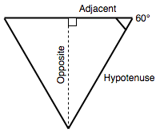

Math is a built-in object that has properties and methods for mathematical constants and functions. It’s not a function object.
Math works with the {{jsxref("Number")}} type. It doesn't work with {{jsxref("BigInt")}}.
Unlike many other global objects, Math is not a constructor. All properties and methods of Math are static. You refer to the constant pi as Math.PI and you call the sine function as Math.sin(x), where x is the method’s argument. Constants are defined with the full precision of real numbers in JavaScript.
Note: Many Math functions have a precision that’s implementation-dependent.
This means that different browsers can give a different result. Even the same JavaScript engine on a different OS or architecture can give different results!
2.718.2; approximately 0.693.10; approximately 2.303.E; approximately 1.443.E; approximately 0.434.3.14159.0.707.2; approximately 1.414.x.x.x.x.x.x.x.x.x.x.x.e^x, where x is the argument, and e is Euler's constant (2.718…, the base of the natural logarithm).1 from exp(x).x.x.x and y.x.1 + x for the number x.x.x.x to the exponent power y (that is, x^y).0 and 1.x rounded to the nearest integer.x, indicating whether x is positive, negative, or zero.x.x.x.x.x.x, removing any fractional digits.The trigonometric functions sin(), cos(), tan(), asin(), acos(), atan(), and atan2() expect (and return) angles in radians.
Since humans tend to think in degrees, and some functions (such as CSS transforms) can accept degrees, it is a good idea to keep functions handy that convert between the two:
function degToRad(degrees) {
return degrees * (Math.PI / 180);
};
function radToDeg(rad) {
return rad / (Math.PI / 180);
};
If we want to calculate the height of an equilateral triangle, and we know its side length is 100, we can use the formulae length of the adjacent multiplied by the tangent of the angle is equal to the opposite.

In JavaScript, we can do this with the following:
50 * Math.tan(degToRad(60)).
We use our degToRad() function to convert 60 degrees to radians, as {{jsxref("Math.tan()")}} expects an input value in radians.
This can be achieved with a combination of {{jsxref("Math.random()")}} and {{jsxref("Math.floor()")}}:
function random(min, max) {
const num = Math.floor(Math.random() * (max - min + 1)) + min;
return num;
}
random(1, 10);
{{Compat}}